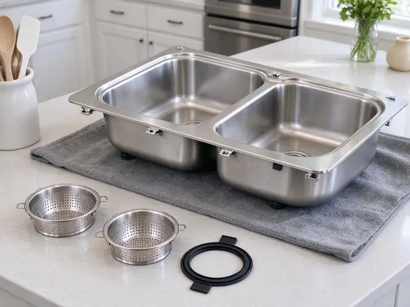

Grease Trap Installation in Summerlin South, NV
Grease trap installation in Summerlin South, NV, sized to your real fixtures and set where your staff can clean it.
- Full-Sink Drain Test
- Flow Control Included
- Overnight Installs Available
- Licensed and Insured

Book a Grease Trap Site Visit in Summerlin South, NV
Call FMR Plumbing at (725) 360-1766 and a tech will walk your kitchen this week.
Commercial Grease Trap Plumbers in Summerlin South, NV
Grease traps fail inspections for boring reasons. The flow control is missing or the unit is one size too small for the kitchen it serves. Both of those are avoidable. We install grease traps in Summerlin South with those checks done before the inspector shows up, which is the easiest way to open on schedule and stay open.
Our expertise includes:
- Traffic-rated lids for drive lanes
- Sampling ports where the sewer authority asks
- Automatic grease removal devices

Additional Kitchen Plumbing Services in Summerlin South, NV
Our kitchen plumbing services in Summerlin South, NV cover sinks, disposals, dishwashers, and grease traps so your kitchen keeps running without backups or leaks.


Customers
Why Choose FMR Plumbing for Grease Trap Installation in Summerlin South, NV?
A trap that is hard to open does not get cleaned. Every trap we set has room above it for cleaning without moving a thing. Placement decides whether cleaning actually happens. Inspectors notice too.
- Tested Before We Leave, A full sink is dumped at once to prove it keeps up with your worst case.
- Traffic-Rated Lids, Outdoor tanks in a drive lane get H-20 rated lids.
- Certified Units, We install traps certified to PDI G-101 or the matching ASME standard.
Citywide Coverage
Neighboring towns around Summerlin South often run separate sewer programs with different grease rules. Rules on sampling ports and pump-out intervals can change at a town line. We match each install to the program that will inspect it. Paperwork follows the rules too.
Experienced Team
Behind the crew, our office staff file the permits and track inspection dates so the plumbers can stay on the tools. There is one person to call about dates. They keep the permit, delivery and inspection dates in one place. Fewer dropped balls.
Safety-First Approach
Grease waste is regulated, so the old trap's contents go to a licensed hauler, not down another drain. You get a copy of the disposal manifest. Old traps are pumped empty before they come out of the floor. Spills are the biggest risk.
Trusted Certified Summerlin South Plumbing Services Professionals
At FMR Plumbing, we are proud to offer certified plumbing services throughout Summerlin South, NV. Those papers on the wall mean something. Our plumbers hold recognized industry credentials, and they follow strict safety and quality rules on every repair, installation and maintenance call we run.
Call Us Now PHCC Plumbing Contractor Recognition
PHCC Plumbing Contractor Recognition Better Business Bureau (BBB) Accreditation
Better Business Bureau (BBB) Accreditation Angi Certified Pro
Angi Certified Pro ISO 9001 Quality Management Certification
ISO 9001 Quality Management CertificationGrease Traps and Interceptors Set in Summerlin South, NV
In-Ground Gravity Interceptor Installation in Summerlin South, NV
Buffets, grocery delis and kitchens doing several hundred covers a night usually end up with an in-ground gravity interceptor of 1,000 gallons or more. We excavate, set the tank level on compacted gravel, and tie in the inlet and outlet. Most homes sit on concrete slabs, so leaks in buried supply lines often show up as warm spots on the floor or higher water bills. We plan the dig and the backfill around what the soil report and the open hole actually show us. Risers bring the lids to grade.

Large Outdoor Grease Interceptor Installation in Summerlin South
Outdoor gravity interceptors run from 750 gallons to well past 2,000, and setting one means an excavator on site and a traffic-rated lid if it sits in the drive lane. We confirm the H-20 load rating before the tank ships. Most go in over two to four days. We set the inlet a few inches higher than the outlet and check both with a laser before any dirt goes back in.
Residential Grease Interceptor Setup in Summerlin South, NV
Homes rarely need a grease trap, though some do. Licensed home bakeries and houses on old clay laterals that keep clogging are the usual cases. A small 4 to 7 GPM unit under the kitchen sink catches most of it, and cleaning takes about ten minutes with a spatula and a bucket. Check with your local health office first.
New Restaurant Build-Out Grease Traps in Summerlin South
On a new build-out, the grease trap gets decided before the slab is poured, not after. We work from the architect's plumbing sheets and the kitchen equipment schedule. Changes get expensive. Moving a trap after the concrete cures means cutting the floor, so we catch problems while it is still paper.
Grease Trap Replacement and Upgrades in Summerlin South
Plastic and steel traps both wear out, just in different ways. With steel, rust eats the seams and the welded baffles first. Plastic cracks. When we pull an old trap we cap the lines, haul it out, set the new unit on the same footprint where possible and reconnect with no-hub couplings so the next swap goes faster.
Hydro-Mechanical Grease Interceptor Installation in Summerlin South
Inside a hydromechanical interceptor, baffles do the separating while a flow control fitting with an air intake holds incoming water to the rated flow. We pipe the air intake the way the manufacturer and the code both require. Get that wrong and the trap siphons. A trap that sits out of level loses capacity, so we shim it flat before connecting anything.
Grease Trap Brands We Install in Summerlin South
Zurn, Watts, Schier and Endura cover most of what we set in commercial kitchens, plus precast concrete tanks for the big outdoor interceptors. Each brand has its own lid gasket and baffle layout. Parts availability matters. We prefer models whose lids and gaskets are stocked nearby, because waiting a week on a part means waiting a week to reopen.

Replacement and Upgrade Services in Summerlin South, NV
Steel traps from decades back rust through at the baffle seams, and by then the outlet is usually passing grease straight to the sewer. A camera down the outlet line tells us how much damage the old unit already did. Sometimes the line needs jetting too. Upgrading also gives you a chance to move from a 20 GPM trap to a 35 or 50 if the menu or seat count grew.
Grease Trap Installation Near Me in Summerlin South, NV
Having a plumber near Summerlin South who already knows your trap makes the next call faster. Our dispatch line is (725) 360-1766. We keep a record of every unit we install, with the model and the install date. That way, when an inspector asks for documentation or a gasket fails years later, we already know which part to bring.
Local crews know the local inspectors. Small paperwork habits, like where the sizing math goes, can cost a week if you get them wrong. A return trip for an inspection correction is short for us.
FMR Plumbing at a Glance
- Fully licensed plumbing team covering Summerlin South, NV
- 24/7 emergency service with same-day scheduling
- Clear written estimates, no hidden fees
- 4.8-star rated by 903+ Nevada customers
Summerlin South Map
Summerlin South Information
- Population
- 30,744
- Area codes
- Local
- Service area
- Summerlin South and communities within 40 miles
- Nearby
- Spring Valley, Las Vegas, Enterprise, Winchester
A grease trap in a Summerlin South, NV kitchen has to match the peak flow of the sinks that drain to it, or grease goes straight to the sewer. The high desert in the north brings cold winters and big daily temperature swings that stress pipes and fittings.
Talk to a Plumber
Call FMR Plumbing for reliable plumbing work done by licensed pros in Summerlin South, NV.
Our Specialized Plumbing Services in Summerlin South, NV
At FMR Plumbing, you get every kind of plumbing service from one company across Summerlin South, NV. From leak detection to full system installs, our team works fast and charges fair prices on homes and commercial properties alike. Explore our core services below:


How a Grease Trap Installation Works in Summerlin South, NV
Most delays come from permits, not the install. This is how we keep a Summerlin South job moving.
Request a Quote
Call FMR Plumbing at (725) 360-1766 for a site visit. Bring your plans if it is a new build-out.
Size and Permit
We size the trap from your fixtures and file the permit and sewer authority review.
Install and Inspect
We set it, test it and stay for the inspection. You get copies of the paperwork.
Frequently Asked Questions About Grease Trap Installation in Summerlin South
Installed prices for small indoor hydromechanical traps typically fall between $1,500 and $5,000. Outdoor tanks cost more, mostly for digging and putting the site back. Brand is a small part of it. The written estimate holds unless the dig turns up a buried surprise.
You get the manufacturer's warranty on the unit and a written labor warranty from us on the installation. Factory terms vary, so we hand you the registration card or file it for you. Keep your cleaning logs. Some manufacturers ask for proof of regular service before they honor a claim on a cracked body or a failed baffle.
Watch the pump-out bills. Rising service frequency means the trap has been outgrown or the baffles have failed. Smell is another clue. Slow drains near the trap and failed inspections point to replacement too.
Zurn and Watts make up a lot of our indoor installs, with Schier and Endura when a plastic body makes more sense. Outdoor interceptors are usually precast concrete, or polyethylene where a crane cannot reach. Any certified brand works. What we will not install is an uncertified import trap, because inspectors reject them and the parts disappear after a year.
An under-sink hydromechanical trap with good access is usually a half-day job, including the flow control and a leak test. Recessing one into the slab adds a day or two for saw-cutting and patching. Outdoor tanks are different. A buried interceptor runs two to five working days after permit, mostly driven by the dig and the paving repair.
Pump-outs every couple of weeks on a trap that used to go two months is the clearest sign you have outgrown it or the baffles have failed. So is a sour grease smell near the floor sinks. Rust shows up too. On steel traps we look for pinholes at the seams, and on any trap we check whether the outlet line downstream is coated with grease that should have been caught.
Size comes from flow, and flow comes from your fixtures. We add up the drain rate of each sink compartment, floor sink and dish machine, then apply the code's drain-down time to get gallons per minute. Gravity tanks use volume instead. Outdoor tanks get sized by the sewer authority's formula, which we run for you.
For indoor traps we lean on Zurn, Watts, Schier and Endura, because their parts are easy to find and their units carry PDI or ASME certification. We like the plastic bodies from Schier where steel would rust out. Brand matters less than sizing. A well-known trap installed too small will still fail inspection, so we pick the size first and the brand second.
What People Are Saying About Our Plumbing Experts?

Marcus H.
Grease from the fryer line kept clogging the kitchen drain at my diner. FMR Plumbing hydro jetted the line after closing, showed me the buildup on camera, and set us up on a quarterly cleaning so it does not catch us on a Friday again.
Drain Cleaning · Spring Valley, NV
Sofia M.
Two new toilets went in during one visit. The tech set them on new wax rings and swapped the old supply lines. He also noticed our bathroom faucet dripping and replaced the cartridge while he was there. No mess left behind.
Toilet Installation · Las Vegas, NV
Mark T.
The floor drain in our office break room backed up every few weeks. The plumber ran a cable, then put a camera down and found roots at a joint about thirty feet out. Seeing it on the screen made the decision easy.
Drain Cleaning · Las Vegas, NV
Nathan E.
Our tankless heater kept throwing an error code and shutting off mid shower. The tech flushed the heat exchanger, which was full of scale, and replaced a bad flow sensor. Hot water has been steady for half a year now.
Water Heater Repair · Paradise, NVLaura S.
Our 40 gallon tank started leaking from the bottom after thirteen years. The tech hauled the old one out, set a new unit with a fresh expansion tank, and had hot water running in about four hours. He took the old tank with him too.
Water Heater Replacement · Enterprise, NVPaul B.
Our pit pump ran nonstop even in dry weather. The plumber found the check valve was stuck open, so the same water kept cycling back into the pit. New valve, new float switch, done in an hour. It runs quiet now.
Sump Pump · Las Vegas, NV